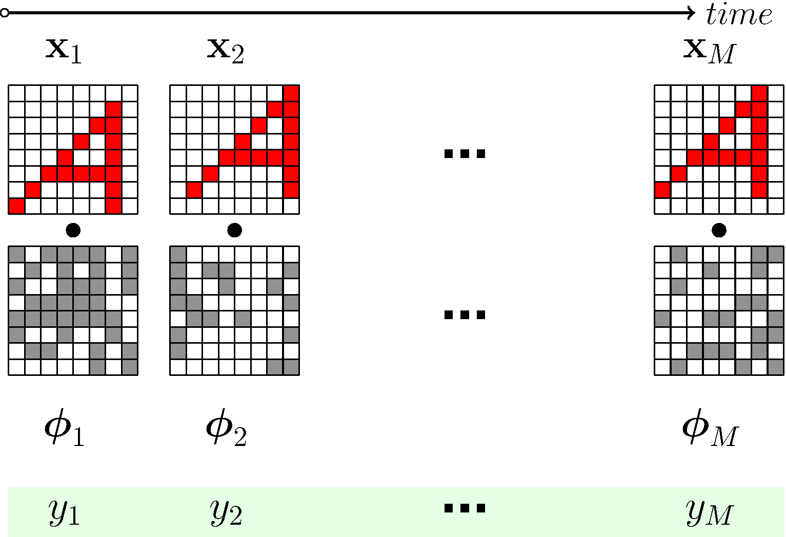
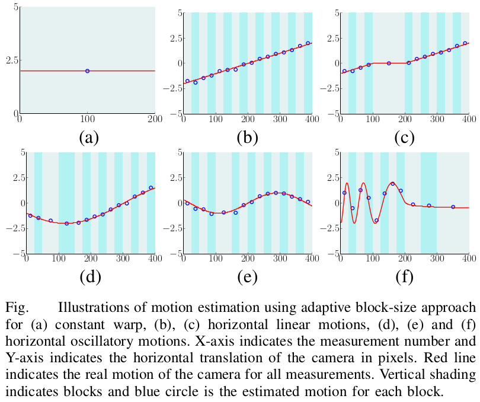

|  |  |
Temporal artifacts due to sequential acquisition of measurements in compressed sensing manifest differently from a conventional optical camera. We propose a framework for dynamic scenes to estimate the relative global motion between camera and scene from measurements acquired using a com- pressed sensing camera. We follow an adaptive block approach where the resolution of the estimated motion path depends on the motion trajectory. To underline the importance of the proposed motion estimation framework, we develop a face recognition algorithm in the compressive sensing domain by factoring in the time-varying nature of the acquisition process.
Vijay Rengarajan, A.N. Rajagopalan, and R. Aravind
International Conference on Pattern Recognition (ICPR), Stockholm, Sweden
August 2014. PDF